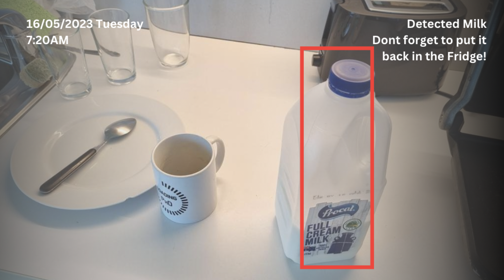
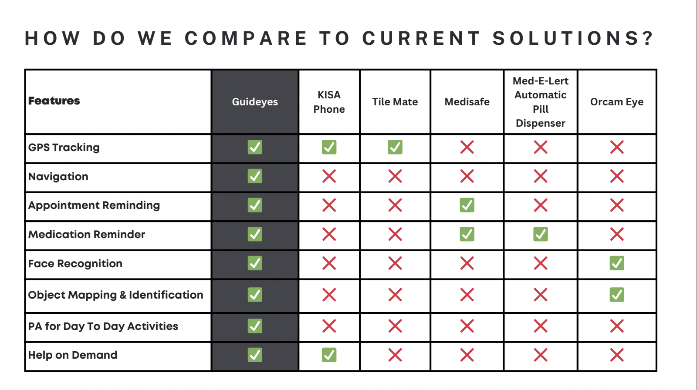
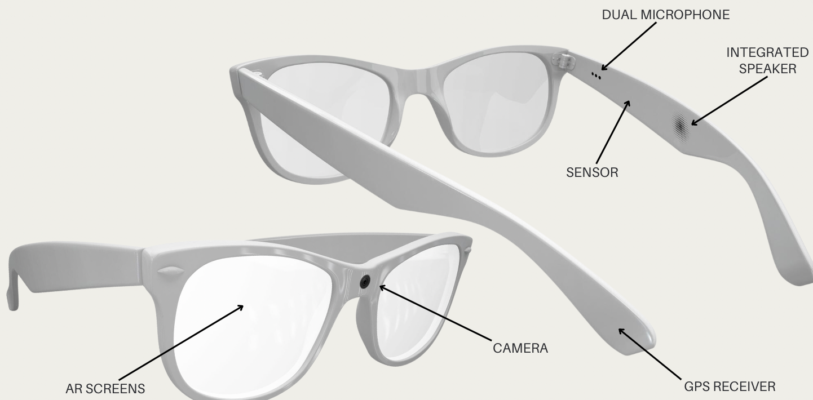

GuideEyes
Transforming Lives with AI-Powered Glasses
Challenged to create an innovative product using Artificial Intelligence, cutting-edge technology met human-centered design in this start-up journey at Monash University in Melbourne.
Me and my team collaborated to develop smart glasses aimed at enhancing the quality of life for early-to-middle-stage dementia patients by assisting with memory recall, cognitive support, and overall well-being.
To understand dementia and the market, the journey began with a comprehensive blend of market research and user research within the field. To identify market gaps and user needs, we delved into prior solutions and conducted phone interviews with dementia helplines.
The research revealed that dementia patients face a range of challenges in daily life. At the same time, existing solutions provide only limited assistance by providing only 1-2 support features in one product. Consequently, we saw the the potential of a product that seamlessly combines all necessary features into one, acting as an assistant that facilitates independence for these individuals.
To address the market gap, we brainstormed possible solutions for combining these features. We comprehensively researched the technological capabilities of different wearable solutions and applications of AI, and conducted additional phone interviews to make sure that the features are tailored to meet user needs and capabilities.
Having gathered additional insights, we concluded that wearable glasses stood out as the most appropriate solution, allowing many promising features in one product. We started conceptualizing the design and features and created a Lo-Fi prototype of the glasses in InDesign and a simple companion app in Canva. To showcase each feature, we created images of different use cases from the perspective of the glasses, as seen at the top of this page.
The outcome became GuideEyes - smart glasses that aim to offer a new level of independence and quality of life for individuals suffering from dementia by assisting with navigation, remembering objects, appointments and tasks, identify family and friends and save conversations.
Product Demonstration
Winning an award
The project ended with a product brief presentation for professionals in the tech industry, featuring a competition across three categories: Best Business, Best Use of Technology, and People's Choice. Among many participating groups, our team was honoured to win the "Best Use of Technology" award.
👉View the project presentation here👈